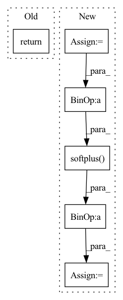

Pattern ID :744
Before Change
super(ActionDecoder, self).__init__()
def forward(self, x):
return x
class RewardDecoder(nn.Module):After Change
self.model = nn.Sequential(*self.layers)
def forward(self, x):
raw_init_std = np.log(np.exp(self.init_std) - 1)
x = self.model(x)
mean, std = torch.chunk(x, 2, dim=-1)
mean = self.mean_scale * torch.tanh(mean / self.mean_scale)
std = self.softplus( std + raw_init_std) + self.min_std
dist = td.Normal(mean, std)
transforms = [TanhBijector()]
dist = td.transformed_distribution.TransformedDistribution(In pattern: SUPERPATTERN
Frequency: 3
Non-data size: 6
Instances Fragment ID: 2754030
Project Name: chamorajg/pl-dreamer
Commit Name: 76fdde73106a7f1aade5a0b5254668f2acd6c439
Time: 2021-08-04
Author: chanduiyer.raja@gmail.com
File Name: planet.py
M Class Name: ActionDecoder
N Class Name: ActionDecoder
M Method Name: forward(2)
N Method Name: forward(2)
M Parent Class: nn.Module
N Parent Class: nn.Module
M File Name: planet.py
N File Name: planet.py
M Start Line: 101
M End Line: 101
N Start Line: 158
N End Line: 168
Before Change
def forward(self, state):
a = F.relu(self.l1(state))
a = F.relu(self.l2(a))
return self.max_action * torch.tanh(self.l3(a))
class Critic(nn.Module):After Change
a = F.relu(self.fc2(a))
mu = self.mu_head(a)
mu = torch.clip(mu, MEAN_MIN, MEAN_MAX)
log_sigma = self.sigma_head(a)
log_sigma = torch.clip(log_sigma, LOG_STD_MIN, LOG_STD_MAX)
sigma = torch.exp(log_sigma)
a_distribution = Normal(mu, sigma)
action = a_distribution.rsample()
logp_pi = a_distribution.log_prob(action).sum(axis=-1)
logp_pi -= (2 * (np.log(2) - action - F.softplus( -2 * action) )).sum(axis=1)
logp_pi = torch.unsqueeze(logp_pi, dim=1)
action = self.max_action * torch.tanh(action) Fragment ID: 2753999
Project Name: ryanxhr/dwbc
Commit Name: 7bf8e90c7bbf238b9a80c6c033844d37a17e898e
Time: 2022-06-24
Author: xuhaoran8@jd.com
File Name: algos/DWBC.py
M Class Name: Actor
N Class Name: Actor
M Method Name: forward(2)
N Method Name: forward(2)
M Parent Class: nn.Module
N Parent Class: nn.Module
M File Name: algos/DWBC.py
N File Name: algos/DWBC.py
M Start Line: 22
M End Line: 23
N Start Line: 36
N End Line: 52
Before Change
out = torch.cat([state, action], 1)
for i, layer in enumerate(self.networks):
out = layer(out)
return state + out
def predict(self, state, action):
passAfter Change
mean = out[:, :self.output_dim]
logvar = self.max_logvar - F.softplus(self.max_logvar - out[:, self.output_dim:])
logvar = self.min_logvar + F.softplus( logvar - self.min_logvar)
return mean, torch.exp(logvar)
def predict(self, state, action):
pass Fragment ID: 2753991
Project Name: x35f/unstable_baselines
Commit Name: a5871d3488b73457316980bf84fb817d1081de6d
Time: 2021-11-20
Author: 1621322691@qq.com
File Name: common/models.py
M Class Name: BaseModel
N Class Name: BaseModel
M Method Name: forward(3)
N Method Name: forward(3)
M Parent Class: nn.Module
N Parent Class: nn.Module
M File Name: common/models.py
N File Name: common/models.py
M Start Line: 47
M End Line: 48
N Start Line: 57
N End Line: 63